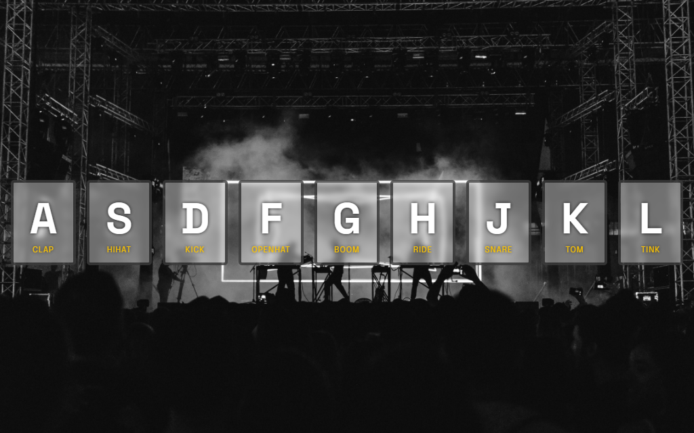
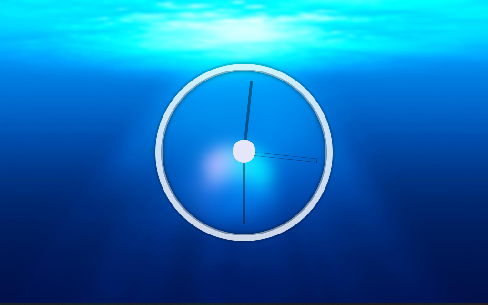
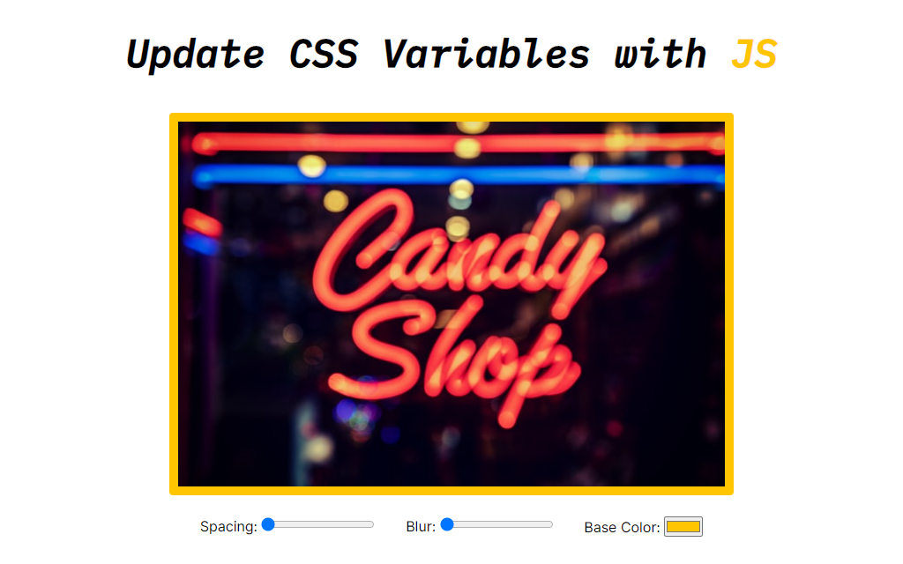

JavaScript30 Showcase
A set of JavaScript projects coded from the
JavaScript30 Course
by
Wes Bos
.

JS Drum Kit
Playing sounds from the keyboard!
Live Demo
Source Code

JS + CSS Clock
A clock made of CSS + JS
Live Demo
Source Code

Fun with CSS Variables
Updating CSS variables via JS
Live Demo
Source Code